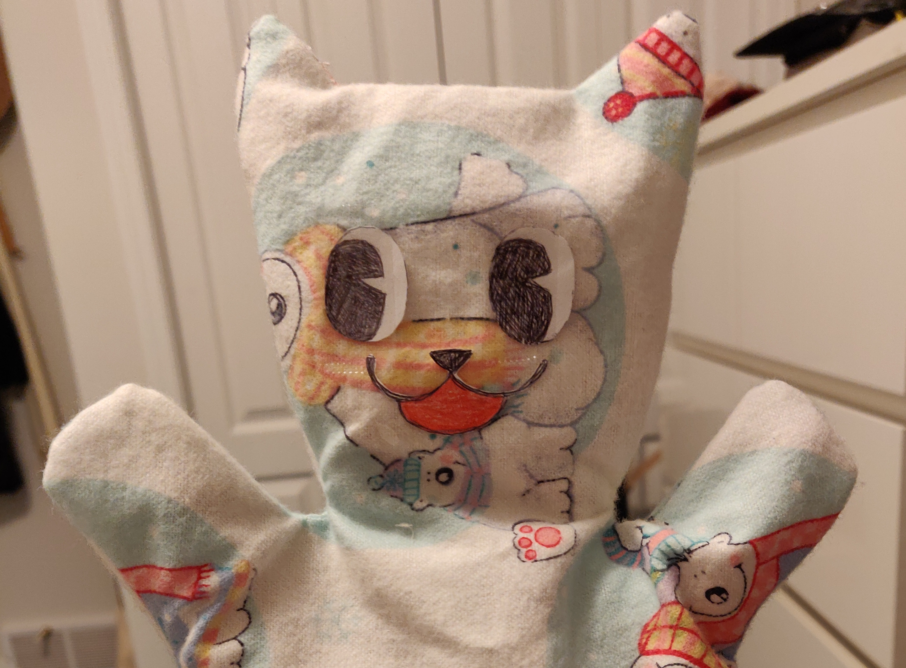

CPSC 599.88: Physical & Tangible HCI is one of the Special Topics courses at the University of Calgary. I took it in winter 2020.
In it, we created four "things" using Arduino microcontrollers. For each project we were given a prompt, but then were also required to add in an additional creative surprise.
Fundamentally, I learned not only how to build new things with hardware, but also the importance of creativity and innovation — there is so much out there that we will never explore if we always think inside the box.
Control an LED with a button and add an additional creative surprise.
The design process:
Since there was already a visual output in the circuit, I also wanted to add an audio output.
The most obvious solution would be to do something with different tones or rhythms; however, pressing a button and playing a song is quite predictable and boring.
I decided to play with the way the music interacted with the button and light, and ultimately decided to separate the first few notes from the rest of the song.
On presentation, people would think it was a boring buzzer which squeaked out different tones on each button press, but then be surprised when the rest of the song played.
To add to the surprise, I picked one of the most upbeat songs I could think of: "Running in the 90's" from Initial D.
A baby mobile with capacitive touch sensor decorations producing musical notes.
The task:
Create a new musical instrument or expressive musical interface. It should take physical inputs and have controlled sound as a non-physical output. This project was done with a partner.
The design process:
In our early brainstorming, we tried to think of different sources of inspiration for physical input.
This included games like Taiko Master and Dance Dance Revolution, as well as existing instruments - my partner and I both share piano as a background.
Based on the instruments and materials we had access to and were portable enough to bring to school, we ultimately decided to try conductive paint.
An initial idea using conductive paint
A conductive paint tutorial we were looking at
However, because the paint was rather expensive and would likely not ship in time, we opted to substitue copper tape instead.
Next, we had to decide the shape of our instrument, what other inputs it could take, and how to map those inputs to output sound.
Ideas with copper tape and other inputs/outputs
While we struggled to decide the overall concept of the instrument, we began to play around with the materials.
Since the tape would be connected by long alligator pins, we came of with the idea to make them dangle from above the musician.
This resembled a baby mobile, so we decided to make our instrument a hanging baby mobile for toddlers to play music.
The building process:
1. Testing the copper tape touch sensor with an LED
2. Using the copper tape to sound a buzzer
3. Changing pitch using an ultrasonic sensor
4. Attaching more speakers, moving ultrasonic sensor to mini breadboard, creating touch sensor decorations
5. Adding potentiometer for volume control
6. Moving speakers to separate breadboard, constructing container for final product
7. Container for final product cont'd - dangling touch sensors
8. Container for final product cont'd - ultrasonic sensor + silder, potentiometer knob on top
Capacitive touch sensors (homemade with copper tape)
Piezo buzzers
Ultrasonic sensor
Potentiometer
Bad Habit Jar
No phones at the table! This is the bad phone habit jar.
The task:
Explore physical output by physicalizing personal data. This project was done with a partner.
The design process:
We began by brainstorming different personal data we could use, such as liquids/calories consumed or money spent on League of Legends.
We ultimately decided to do a variation of a swear jar - not only would it visibly quantify bad habits (via money), but also inflict a slight punishment to discourage them in the future.
Next we had to choose a bad habit to target. Most classic examples were disqualified for being mental (e.g. negative thinking), behavioural (e.g. tardiness), or unsanitary (e.g. nail biting). They would be too difficult use as input.
In the end, we realized we both personally had a bad habit of using our cell phones at the dinner table, so we decided to use that.
For building, we started with a 3D-printed rack and pinion and designed around that.
Between a DC motor and servo motor, we opted for the servo because the 180 degree rotation provided a small and consistent range of movement suitable for our purpose.
For input, we played with a tilt switch but found the readings were too unreliable, so we switched to a gyroscope instead.
As a final touch, we added a buzzer to signal when the user had surpassed the time threshold for using their phone. Since the number of coins used is finite, the buzzer would serve as a final reminder to the user to put down their phone.
The building process:
1. Manually simulating how coins would be pushed into the jar
Create a wearable interface which embodies the Danish concept of hygge. It should have a physical input, physical or non-physical output, and a compelling story behind it.
The design process:
Hygge was a difficult concept to grasp. It's 'cozy', but you don't have to be at home. You can feel it when you're enjoying quiet time by yourself, but also when you're being rowdy with friends.
There was no specific situation which defined hygge, so I thought about how to represent happiness and comfort.
My first ideas played with a person's heart as a reflection of their feelings, and fireplaces as a representation of coziness.
A shirt which plays music based on your heart rate
A necklace with a flame that grows and shrinks
I wasn't entirely satisfied with either of these ideas, and wanted to do something a bit more personal.
I realized my hygge was the warm fuzzy feeling when I listen to music I love, finish a good video game or story, or can act silly without restraint. And who do I do all of these with? My friends.
However, this assignment came just after the first pandemic restrictions had been put in place and we were all confined to our homes. I couldn't see any of my friends, so I decided to create a new one: Wilson, the hand puppet.
Hand puppet chat buddy
I'd initially wanted Wilson to be a Cleverbot-esque AI chat partner, but unfortunately due to the pandemic restraints I could not go out to buy a microphone and speaker, and heaven forbid I use piezo buzzers a fourth time.
I also effectively had no knowledge of AI and no time to figure it out, so I had to rework my idea quite a bit.
Problem 1) Output: how to let Wilson talk - I could (a) do audio output through my laptop, (b) write out words on an LCD display, or (c) use lights/vibrations to communicate through Morse code.
As the LCD was rather small and I wanted audible output, I decided to be tethered to the laptop for output.
Problem 2) Input: how to let Wilson hear me - I liked the idea of communicating based on mood, so I decided to use a heart rate sensor.
However, heartbeats can not be manipulated to signal Wilson to talk; I had to combine it with something else. I thought of those stuffed toys whose hands or feet you squeeze to get them to start singing or dancing, and put capacitive touch sensors on his arms and ear (for lack of feet).
I mapped his responses to whichever part you squeezed.
Problem 3) Processing: how Wilson would process the input and determine an appropriate reply - this was inherently solved when I mapped the touch sensors to the kind of response he'd give.
As for exactly what Wilson would say, I thought about how conversation works. I simplified it into statments which provoke conversation, and responses to those statements.
I also added the option to play music, which is where the heart rate monitor came into play. When the user was relaxed he would play 'chill' music, when excited he would play 'hype' video game music, and when overexcited, calming ballads.
The building process:
1. Testing the heart rate sensor by having an LED pulse at the same time as my heart
2. Doing the same thing but sending serial information to P5.js for output
3. Changing output based on a threshold
4. Sewing Wilson's body

5. Making his face
6. Connecting capacitive touch sensors and positioning Arduino on his back
I used the P5.js JavaScript library and online editor to read data from the Arduino's serial port.
I adapted the editor's example code, which is a program that draws a circle or square depending on whether the output is 0 or 1 (meant for a button press).
I formatted my serial output to be the calculated heart beats per minute, + 1000, 2000, or 3000 depending on which touch sensor was being touched (0 for none).
I also changed the shape drawn to a heart and added a heartbeat animation in sync with the user's actual heartbeat. The colour of the heart changes depending on what output Wilson is giving.
All music and speech lines are played from MP3 files.
The circuit:
Materials used:
Arduino Uno
Mini breadboard
Jumper wires
Alligator clips
Resistors
Capacitive touch sensors (homemade with copper tape)